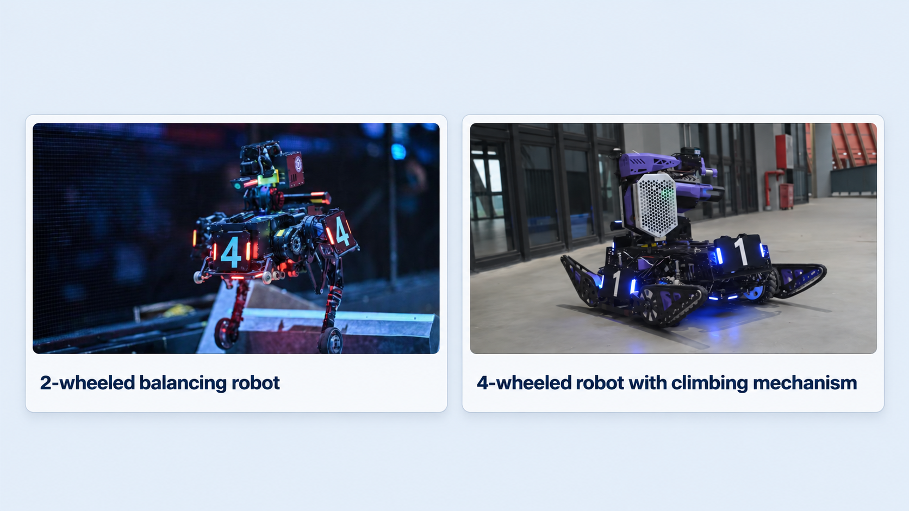
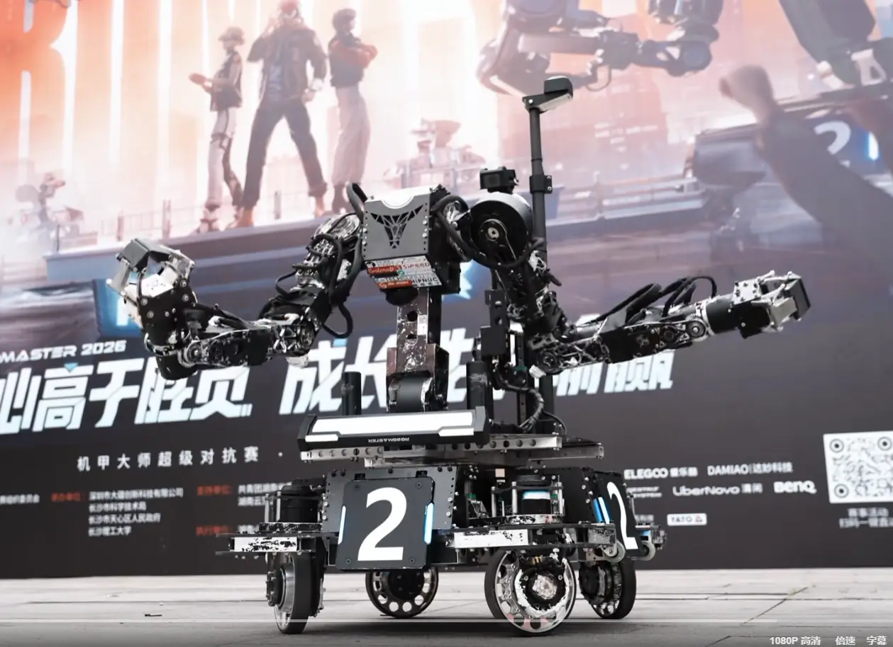
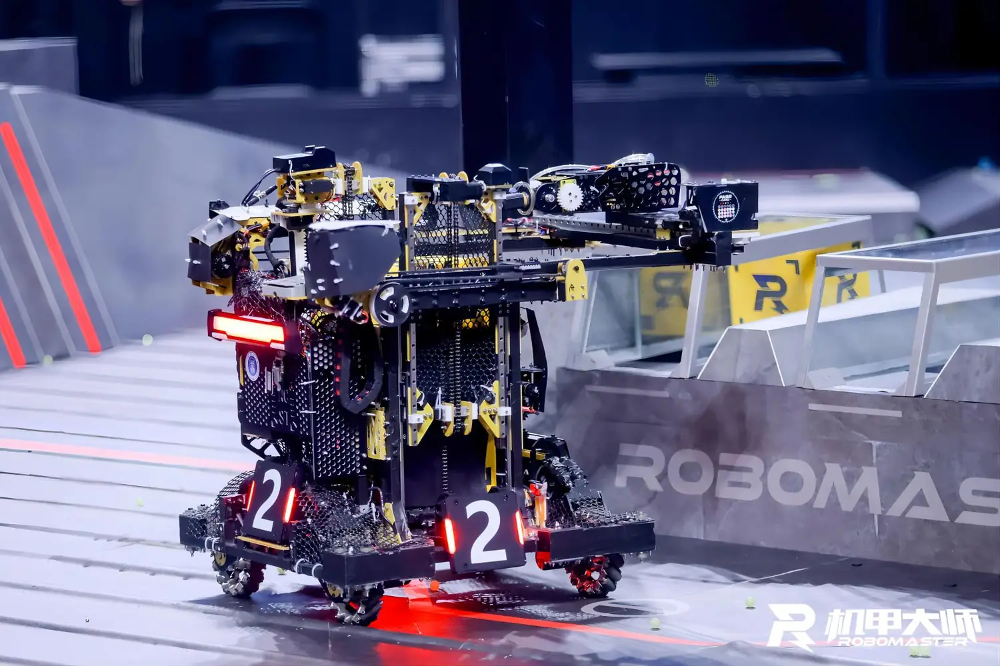
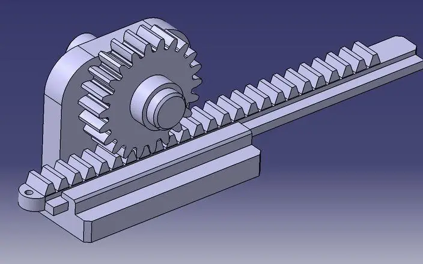
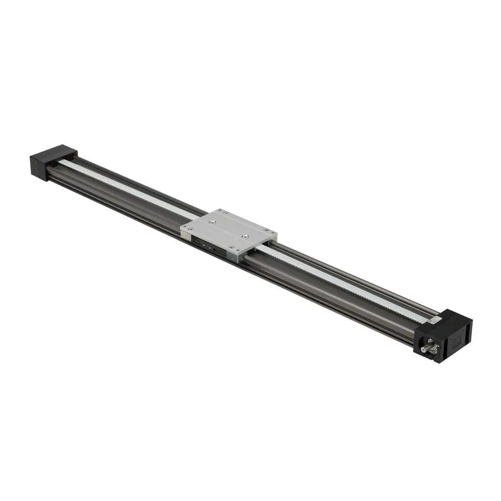
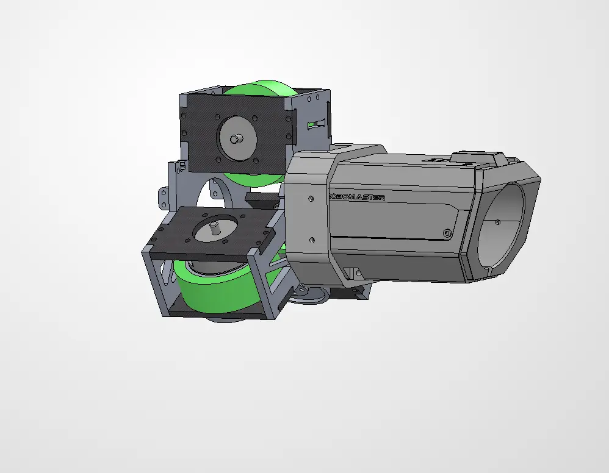
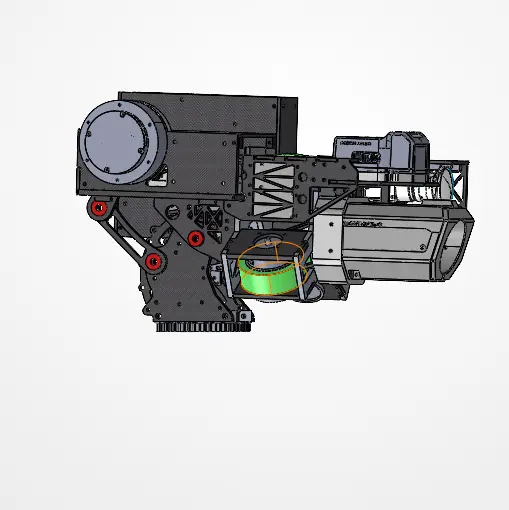
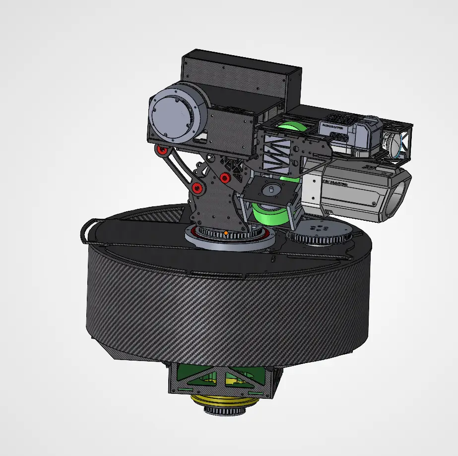

5. Design Thinking Methodology
Three coupled subsystems are considered: chassis, acquisition/locking interface and detachable launcher. Concepts were evaluated against compliance, reliability, complexity, mass and integration risk.
Chassis Design
The key design features for the chassis is capability of going up the high ground, maintainability and strong structural stability.
Various approaches have been developed to enable RoboMaster robots to overcome elevated terrain, particularly through the use of articulated wheel-leg mechanisms, large-diameter balancing wheels, tracked systems or special lifting mechanisms [9]. These drive systems can be classified in 2 broad categories: 2-wheeled balancing robots and 4-wheeled robots with climbing mechanisms.

Figure 8: Comparison of 2-wheeled balancing and 4-wheeled climbing robots
For a balancing robot, there are 2 main archetypes: parallel-leg and serial leg. Both robots use different methods of moving up the step, the serial-leg design “drives” onto the step and retracts its legs whereas the parallel-leg design uses a less reliable drive-and-jumps method.
Additionally, a serial-leg design has a “self-recovery” feature whereas the parallel-leg robot is incapable of recovering if it flips during the match. As such the serial-leg mechanism was chosen.
Wheel-leg concept comparison: external demonstrations
These external demonstration videos support a qualitative comparison of wheel-leg configurations
Climbing steps — parallel-leg versus serial-leg
Recovery after overturning — parallel-leg versus serial-leg
Bilibili videos are embedded through their external player. If playback is blocked by the browser or video provider, use the direct “Watch on Bilibili” link on each card.
Grabbing Mechanism Design
Preliminary concept screening compared four acquisition mechanisms: a six-DOF robotic arm, a gantry-assisted arm, a rack-and-pinion linear puller, and a timing-belt linear puller. The evaluation criteria and weights are documented in Appendix C. No detailed grabbing mechanism has yet been designed or tested; the concept scores below are estimates used to guide the next design phase.
The trade-off is informed by studies of precision linear feed mechanisms [16], motion-planning complexity in multi-joint robot arms [17], transmission error and backlash in rack-and-pinion drives [18], and the compliance and dynamics of timing-belt stages [19]. These studies explain relevant engineering mechanisms; they do not validate the proposed puller at competition scale.
Concept overview: four grabbing-mechanism archetypes
The four candidate mechanisms differ primarily in how they position and retrieve the detachable launcher. The images below are illustrative references, not fabricated or validated prototypes of the proposed design.
| Archetype | Reference image | Operating principle | Design implications |
|---|---|---|---|
| 01Six-DOF arm with gripper |  | A multi-joint arm positions a gripper around the launcher interface, then lifts or pulls it into place. | Flexible reach and orientation; many joints add mass, controls and mechanical complexity. |
| 02Gantry-assisted arm |  | Guided linear axes position a simpler arm or gripper before retrieving the launcher. | Controlled approach path, but the gantry adds structure, packaging volume and travel time. |
| 03Rack-and-pinion puller |  | A driven pinion translates a rack or carriage to draw the launcher along a defined docking path. | Relatively simple linear actuation; gear backlash and precise engagement require attention. |
| 04Timing-belt linear puller |  | A motor-driven timing belt moves a guided carriage or hook to pull the launcher toward its interface. | Compact, potentially fast linear travel; alignment sensitivity and belt compliance require testing. |
Concept overview: proposed acquisition archetypes and reference illustrations.
Weighted concept evaluation
Each criterion is scored from 1 (least favourable) to 5 (most favourable). For mechanical complexity, a higher score means a simpler mechanism. Weights are taken from Appendix C; all scores are preliminary engineering estimates pending prototype validation.
| Mechanism | Reliability30% | Grabbing speed30% | Mechanical complexity20% | Weight & space10% | Ease of operation5% | Alignment tolerance5% | Weighted total/ 5 |
|---|---|---|---|---|---|---|---|
| Six-DOF arm with gripper | 4 | 3 | 1 | 1 | 3 | 5 | 2.80 |
| Gantry-assisted arm | 4 | 2 | 1 | 1 | 3 | 4 | 2.45 |
| Rack-and-pinion puller | 5 | 3 | 5 | 4 | 5 | 2 | 4.15 |
| Timing-belt linear puller Preferred concept | 5 | 5 | 5 | 4 | 5 | 2 | 4.75 |
Table 5: Grabbing Mechanism Weighted Decision Matrix
The timing-belt linear puller scored highest in the preliminary comparison (4.75/5), followed by rack and pinion (4.15/5), the six-DOF arm (2.80/5), and the gantry arm (2.45/5). Its small actuator count and expected speed are promising, but alignment tolerance remains a key risk. Detailed mechanism design, interface geometry, fabrication, and timed pickup testing are future work; the selected concept is not yet a completed solution.
Modular 42mm Launcher
Three launcher module boundaries were assessed: firing-only, firing with a pitch/feed path, and a fully self-contained module. Architectures and evaluation criteria are detailed in Appendix C.
Scope of work at interim stage: Only preliminary launcher module architecture analysis and comparison have been completed. The attachment interface, feeding connection, pitch integration and detailed mechanism will be designed, fabricated and tested in future work.
| Launcher-Only Module (Speed Monitor + Flywheel)  | Launcher Module with feedpath (Speed Monitor + Flywheel + Pitch + Feedpath)  | Self-contained Launcher Module (Speed Monitor + Flywheel + Feedpath + Pitch + Projectile Storage)  |
|---|---|---|
| Contains only the projectile acceleration and speed measurement components. Feeding and aiming mechanisms remain on the robot. | Incorporates pitch axis and projectile feedpath, but projectiles are stored on the chassis | Incorporates projectile storage, feeding, pitch adjustment and firing within one detachable assembly. |
Table 6: Launcher architecture descriptions and preliminary CAD reference images.
The modular architecture is informed by prior surveys of self-reconfigurable robots [13] and assembly-oriented modular product design [14]. The aiming/pitch mechanism should also account for the mass–inertia–stabilization trade-off discussed in optical gimbal literature [15]. The assessment scores remain design estimates, not validated performance.
Concept scores use a 1–5 qualitative scale; no comparative physical tests have yet been performed.
Qualitative architecture scores are summarized below (criteria in Appendix C):
| Mechanism | Attachment Reliability | Electrical Complexity | Weight | Projectile Feeding Reliability | Overall |
|---|---|---|---|---|---|
| Launcher-Only Module | 3 | 5 | 5 | 3 | 4/5 |
| Launcher Module with feedpath | 2 | 3 | 3 | 3 | 2.7/5 |
| Full Gimbal | 4 | 1 | 1 | 5 | 2.7/5 |
Reading the scores: 1 = less favourable and 5 = more favourable for each criterion. For electrical complexity, 5 indicates fewer electrical connections; for weight, 5 denotes a lighter module. The slide's weight-scale annotation is inconsistent with its stated lightweight preference, so the report uses the benefit-oriented interpretation. Scores are preliminary engineering judgments, not experimental measurements.
Table 7: Launcher Weighted Decision Matrix
The launcher-only module scored highest in this preliminary comparison (4.00/5, versus 2.70/5 for the feedpath and full-gimbal alternatives). Separating the launcher from the feedpath may reduce detachable mass and electrical connections, but could introduce feeding misalignment or jamming. The detailed interface and actual launcher design have not yet been completed and are explicitly included in future work, with validation required before a final architecture can be confirmed.